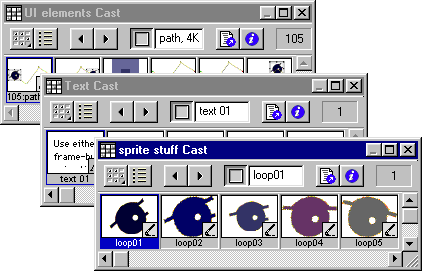
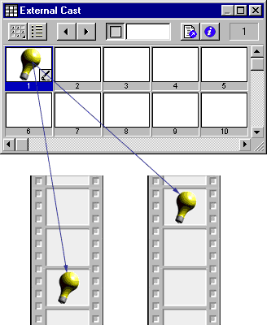

Using Director > Cast members and Cast windows > Cast members and Cast windows overview
Using Director > Cast members and Cast windows > Cast members and Cast windows overview |
Cast members and Cast windows overview
Cast members are the media and other assets in your movie. They can be bitmaps, vector shapes, text, scripts, sounds, Flash movies, QuickTime movies, AVI videos, and more. When you place a cast member on the Stage or in the Score, you create a sprite. For more information on sprites, see Sprites overview.
You use windows called casts to group and organize your cast members. To populate casts, you import and create cast members. You can create and use multiple casts in a movie.
You can create and edit cast members in Director using basic tools and media editors such as the Paint and Text windows, and you can also edit cast members using external editors. In addition, you can import cast members from nearly every popular media format into a movie file and link cast members to external files, for some media types, on a disk or the Internet for dynamic updating.
The Property Inspector contains asset management fields for cast members on the Member tab. These fields let you name your cast members, add comments about them, and view information such as creation and modification dates, and file size.
Casts can be internal—stored inside the movie file and exclusive to that movie—or external—stored outside the movie file and available for sharing with other movies. When you create a new movie, an empty internal cast is automatically created, and when you open the Cast window it is in the default List view.

Internal casts

External casts
External casts are also useful for creating groups of commonly used cast members that you can switch while the movie plays, such as when you want to switch the language used in a movie. Using external casts can keep the movie size small for downloading; an external cast can download separately from the movie file if or when it is needed.